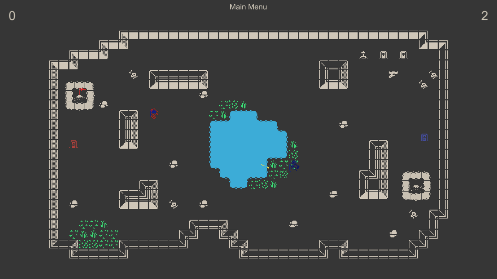

Skip and Hook
After The Flags is a local multiplayer game for two players (P1 keyboard and mouse, P2 controller) played from a top-down perspective. The main premise of this game is to take your opponent's flag and take it back to your side. Of course, you will have to stop your opponent, that's possible by shooting him with your bow or getting close and personal to stab him with your sword.
For now, there are four maps in total divided into two types. First where you and your opponent each have your flag to defend. And the second one has only one flag on the map which you will have to fight for.
PLAY ON ITCH.IO